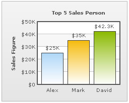
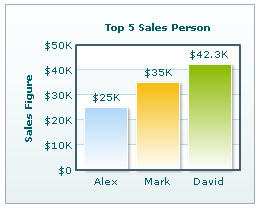

Chart Palettes
FusionCharts offers 5 palettes for you to choose from. The palette theme configures colors of the following:
- Background and border
- Canvas border and background
- Fonts
- Div lines
- Tooltip
- Anchors
- Legend
The palettes are numbered 1 to 5 and can be chosen using: <chart palette='1' ...>.
Shown below are the same chart with a few different palette colors.
 |
 |
 |
Palette Set as 1 |
Palette Set as 2 |
Palette Set as 3 |
As you can see in the images above, the various elements of chart have changed colors based on palette number. However, the data items do not change color, as internal palettes do not cover them.
<set label='Alex' value='25000' />
<set label='Mark' value='35000' />
<set label='David' value='42300' />
</chart>
Here, 3 hex colors have been specified in paletteColors attribute. Since there are 3 columns in the chart, it results in following: